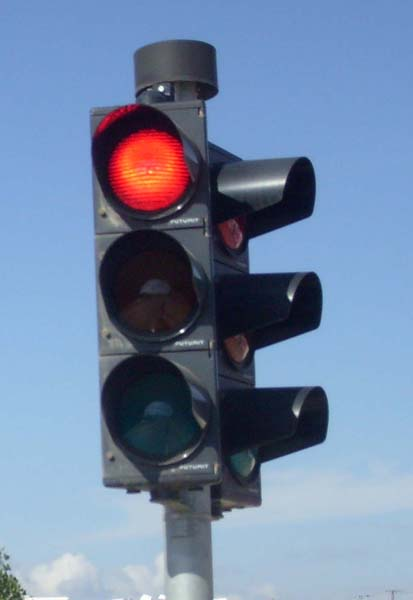
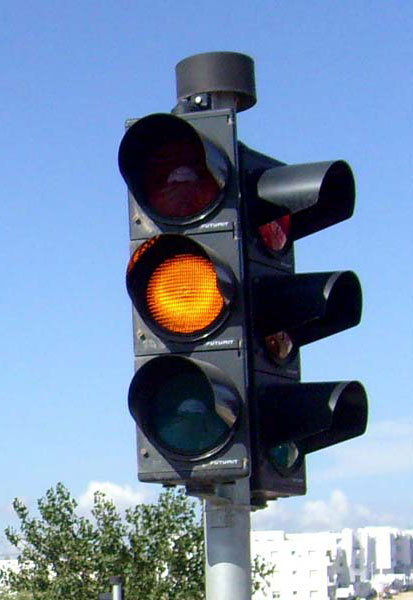
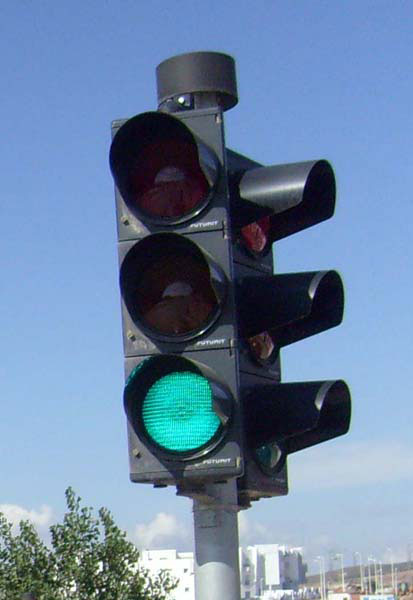
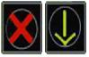
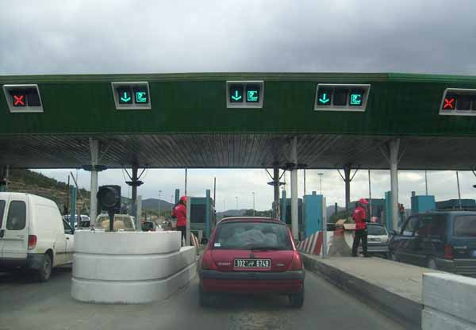
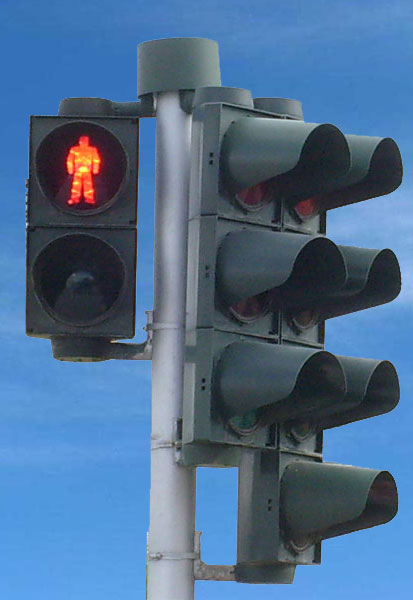
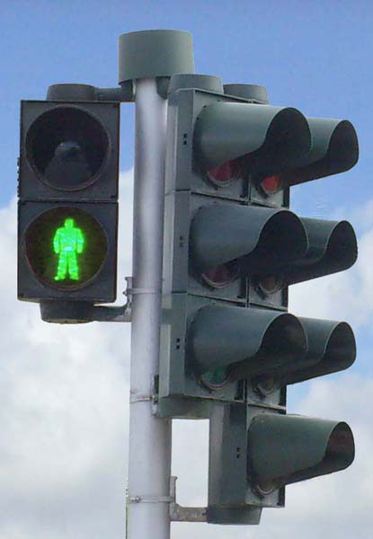
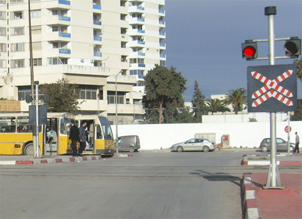
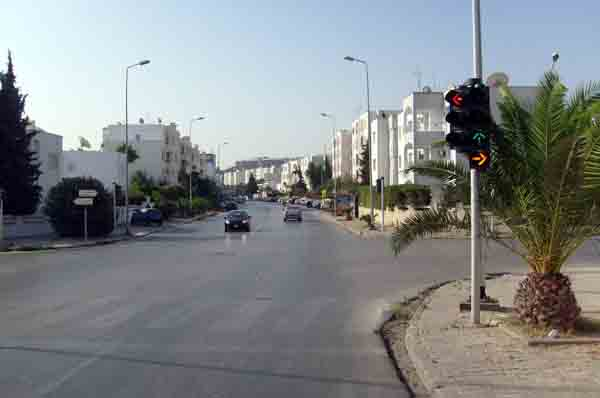
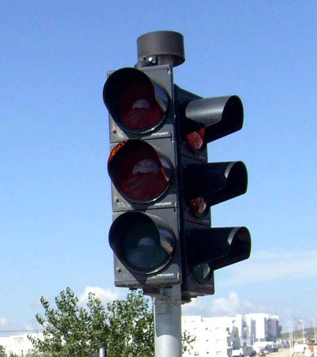

تستعمل الإشارات الضوئية بهدف ضمان السلامة المرورية وتحسين سيولة الجولان.
يمكن أن تأخذ الأضواء شكلين: أضواء دائرية أو في شكل أسهم.
تنظم الأضواء الثلاثية حركة المرور بالمفترقات فيما تنظم الأضواء الثنائية حركة المرور بمحطات الاستخلاص وبممرات المترجلين وبتقاطع الطرقات مع السكة الحديدية.
الإشارات الثلاثية
تكون الأضواء ذات نظام بثلاثة ألوان دائرية وتعني مايلي :

الضوء الأحمر = قف
-ممنوع تجاوز خط التوقف.
-وفي وصورة عدم وجود هذا الخط يعني ممنوع تجاوز العلامة ذاتها.

•الضوء البرتقالي الثابت = قف
-عند خط التوقف
-عند العلامة نفسها ( في صورة عدم وجود خط توقف )

•الضوء الأخضر : يعني السماح بتجاوز العلامة .
توضع الأضواء حسب الطريقة التالية :
1.الضوء البرتقالي : يظهر بعد الضوء الأخضر.
2.الضوء الأحمر : يظهر بعد الضوء البرتقالي.
3.الضوء الأخضر: يظهر بعد الضوء الأحمر.
الاشارات الثنائية
تنظم الأضواء الثنائية حركة الجولان بالسبل
•الأضواء الخاصة بمحطات الإستخلاص


-.الضوء الأحمر في شكل قاطع ومقطوع يوضح السبيل الممنوع .
-أما الضوء الأخضر في شكل سهم موجه إلى الأسفل يوضح السبيل المسموح به .
الأضواء الخاصة بالمترجلين
تكون الإشارات الضوئية الخاصة بسير المترجلين ذات لونين.
تعني هذه الإشارات مايلي :


الأضواء الخاصة بالمترجلين
تكون الإشارات الضوئية الخاصة بسير المترجلين ذات لونين.
تعني هذه الإشارات مايلي :

الأضواء في شكل أسهم
يمكن تعويض الضوء الأحمر والضوء البرتقالي الثابت والضوء الأخضر بسهم أو عدة أسهم ذات لون احمر أو برتقالي أو أخضر, هذه الأسهم لها نفس المعنى ولكن المنع أو السماح لا يخص إلا الاتجاهات المشار إليها بالأسهم.

عند وجود ضوء أو عدة أضواء إضافية في شكل أسهم أوعدة أسهم خضراء مضاءة في نفس الوقت مع الضوء الأحمر أو الضوء البرتقالي ,فإن هذه الأسهم تعني السماح بمواصلة السير فقط في الاتجاهات المشار إليها بالسهم بشرط فسح المرور للسواق القادمين بصفة عادية من اتجاهات أخرى والمترجلين.
الأضواء الرفافة

•الضوء البرتقالي الرفاف : يعني السماح بتجاوز العلامة مع مضاعفة الانتباه ولا يغير قواعد الأولوية.
ويمكن أن يتعلق ب :
-ضوء موضوع بصفة منفردة أو ضوئيين يشتغلان بالتداول .
-ضوء تابع لنظام ذي ثلاثة ألوان إذا كان هذا النظام لا يشتغل.
•ضوءان أحمران رفافان يشتغلان بالتداول وموضوعان بتقاطع الطرقات مع السكك الحديدية